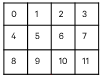

| AWB stats filters / Stats subsample concept | |
To view the stats subsample parameters, open a project and click Stats SubSample in the Tree View tab.
| Parameter name | Description | Tuning | Factory default |
|---|---|---|---|
| Enable Flag | Enables or disables stats subsample |
Set to 1 |
1 |
| Mode | Provides two subsampling
modes
|
Use skip mode to select stats to use or discard; use binning mode to select stats to average | SKIP |
| Pattern |
Specifies which stats to use in 4x3 mask; index order is 0 to 11  |
Use to determine skip or
binning pattern
|
0, 4, 8 are set to 1 |